AgentScope Training Extension¶
Overview¶
Background¶
Agent developers typically work with open-source models, using fine-tuning methods such as SFT (Supervised Fine-Tuning) and RFT (Reinforcement Fine-Tuning) to balance Agent cost, performance, and effectiveness in specific scenarios. This extension helps Agent developers conveniently and continuously leverage real online interaction data to optimize models and Agents, establishing a complete data loop from production to training systems, enabling “Agents that get smarter with use” through online training.
Online Training¶
Online Training is a training paradigm that directly utilizes real user interaction data in production or near-production environments to continuously optimize Agent behavior. Unlike traditional Offline Training—which involves collecting historical logs, building static datasets, and training models in isolated environments—online training emphasizes deep coupling with real toolchains and user behavior, achieving a “run, learn, and optimize” closed loop.
Key Characteristics¶
1. Reuse Production Toolchains
Agents can directly invoke real tools deployed in production (such as APIs, databases, business systems, etc.) during training, without the need to build simulation environments or write mock tools specifically for training.
Advantage: Avoids “training-deployment deviation” (Reality Gap) caused by inconsistencies between mock tools and actual production behavior; significantly reduces integration costs and improves the authenticity and effectiveness of training data.
2. Support Incremental Learning with Fast Cold Start
Does not depend on complete historical datasets; Agents can start learning from a small number or even single real interactions, suitable for newly launched Agents or long-tail scenarios, significantly lowering the startup threshold.
Constraints¶
Safe Support for Read-Only Tools by Default
Since the training process may involve multiple attempts or replays, directly invoking write-operation tools (such as “place order”, “deduct payment”, “send message”) may cause repeated execution, leading to business risks. Therefore, write operations require additional safeguards through sandbox mechanisms, idempotent design, or manual review. Users need to ensure the safety of the tools used by their Agents.
Multi-Turn Interaction Scenarios Require Explicit Modeling
Current mainstream training frameworks natively support single-turn interactions between users and Agents (user asks → Agent responds). In this interaction, Agents can have multiple interactions with LLMs.
For multi-turn dialogues or complex task flows (such as book flight → select seat → payment), developers need to design additional state management, user behavior simulation, or trajectory sampling strategies.
Architecture¶
This solution uses Trinity-RFT as the training backend. Trinity-RFT is a general-purpose, flexible, and user-friendly Large Language Model (LLM) Reinforcement Fine-Tuning (RFT) framework.
Github: https://github.com/agentscope-ai/Trinity-RFT
Version requirement: v0.4.0 and above
The online training mode decouples three components: Agent Runner, inference service (Explorer), and training service (Trainer):

Agent Runner is responsible for running user Agent applications, processing user requests, and interacting with Explorer through RESTful APIs. This component is implemented, deployed, and managed by users themselves, with no constraints from Trinity-RFT.
Explorer serves as the inference service, processing requests from Agent Runner, recording trainable data (Experience), and storing data in the database. Explorer provides the following RESTful interfaces for Agent Runner to call:
chat: Compatible with standard OpenAI chat completions interface, handling user dialogue requests.
feedback: Receives user feedback on Agent responses.
commit: Notifies Explorer to submit data to Trainer.
Trainer serves as the training service, retrieving new training data from the database, training the model, and storing updated model checkpoints in a shared file system for Explorer to use.
Agent Runner, Explorer, and Trainer can be deployed on different servers. Among them, Agent Runner is managed by users themselves, only requiring network connectivity with Explorer and no GPU resources. Explorer and Trainer need to be deployed on GPU servers through Trinity-RFT and must ensure both can access the same shared file system so that model checkpoints saved by Trainer can be read by Explorer.
Core Features¶
This solution provides end-to-end online training support natively in AgentScope Java, aiming to establish a complete loop from production to model optimization with the following goals:
Leverage Real Online Interaction Data: Agent developers can directly train using real request invocations and tool states from production Agent environments
Minimal Setup Experience: Agent developers only need to provide key training configurations (such as reward functions in RL) to automatically complete execution, data collection, and the entire training process
Unified Training Interface Covering Mainstream Optimization Methods: Native support for supervised fine-tuning (SFT), knowledge distillation, and task-specific reinforcement learning algorithms (such as PPO), without needing to switch frameworks or depend on other ecosystems
Quick Start¶
Maven Dependency¶
<dependency>
<groupId>io.agentscope</groupId>
<artifactId>agentscope-extensions-training</artifactId>
<version>${agentscope.version}</version>
</dependency>
Define Request Selection Logic¶
Request selection logic is used to filter out requests that need to be used for training.
Built-in Strategies:¶
SamplingRateStrategy - Random sampling. All online requests are filtered by percentage.
TrainingSelectionStrategy strategy = SamplingRateStrategy.of(0.1); // 10%
ExplicitMarkingStrategy - Users explicitly mark important requests
TrainingSelectionStrategy strategy = ExplicitMarkingStrategy.create();
// In your application code, explicitly mark requests for training
TrainingContext.mark("high-quality", "user-feedback");
agent.call(msg).block(); // This request will be used for training
Custom Strategy¶
You can implement the TrainingSelectionStrategy interface by referring to SamplingRateStrategy or ExplicitMarkingStrategy, and customize your request filtering logic in the shouldSelect method according to your business needs.
Define Reward Function¶
You can implement the RewardCalculator interface and customize your reward calculation logic in the calculate method according to your business needs. Generally, rewards are decimals between 0 and 1.
Start Training Backend¶
Install Trinity¶
Before installation, ensure your system meets the following requirements. Source installation is recommended:
Python: Version 3.10 to 3.12 (inclusive)
CUDA: Version >= 12.8
GPU: At least 2 GPUs
git clone https://github.com/agentscope-ai/Trinity-RFT
cd Trinity-RFT
pip install -e ".[dev]"
pip install flash-attn==2.8.1
Configure Training Settings¶
Write Explorer Service Configuration¶
mode: serve # set to 'serve' for online inference service
project: test # set your project name
name: test # set your experiment name
checkpoint_root_dir: CHECKPOINT_ROOT_DIR # set the root directory for checkpoints, must be an absolute path, and should be on a shared filesystem
model:
model_path: /path/to/your/model # set the path to your base model
max_model_len: 8192
max_response_tokens: 2048
temperature: 0.7
algorithm:
algorithm_type: "ppo" # current version only supports ppo for online training (group is not supported yet)
cluster:
node_num: 1
gpu_per_node: 4 # suppose you have 4 GPUs on the node
explorer:
rollout_model:
engine_num: 2
tensor_parallel_size: 2 # make sure tensor_parallel_size * engine_num <= node_num * gpu_per_node
enable_openai_api: true
enable_history: true
enable_auto_tool_choice: true
tool_call_parser: hermes
# reasoning_parser: deepseek_r1 # if using Qwen3 series models, uncomment this line
dtype: bfloat16
seed: 42
service_status_check_interval: 10 # check new checkpoints and update data every 10 seconds
proxy_port: 8010 # set the port for Explorer service
# trainer:
# save_interval: 1 # save checkpoint every step
# ulysses_sequence_parallel_size: 2 # set according to your model and hardware
buffer:
train_batch_size: 16
trainer_input:
experience_buffer:
name: exp_buffer # table name in the database
storage_type: sql
# path: your_db_url # if not provided, use a sqlite database in checkpoint_root_dir/project/name/buffer
synchronizer:
sync_method: checkpoint
sync_interval: 1
monitor:
monitor_type: tensorboard
Write Trainer Service Configuration¶
mode: train # set to 'train' for training service
project: test # set your project name, must be the same as in Explorer
name: test # set your experiment name, must be the same as in Explorer
checkpoint_root_dir: CHECKPOINT_ROOT_DIR # set the root directory for checkpoints, must be the same as in Explorer
model:
model_path: /path/to/your/model # set the path to your base model, must be the same as in Explorer
max_model_len: 8192 # must be the same as in Explorer
max_response_tokens: 2048 # must be the same as in Explorer
temperature: 0.7 # must be the same as in Explorer
algorithm:
algorithm_type: "ppo" # current version only supports ppo for online training (group is not supported yet)
cluster:
node_num: 1
gpu_per_node: 4 # suppose you have 4 GPUs on the node
buffer:
train_batch_size: 32 # trainer consumes 16 samples per step
trainer_input:
experience_buffer:
name: exp_buffer # table name in the database, must be the same as in Explorer
storage_type: sql
# path: your_db_url # if not provided, use a sqlite database in checkpoint_root_dir/project/name/buffer
trainer:
save_interval: 16 # save checkpoint every step
ulysses_sequence_parallel_size: 1 # set according to your model and hardware
save_hf_checkpoint: always
max_checkpoints_to_keep: 5
trainer_config:
trainer:
balance_batch: false
max_actor_ckpt_to_keep: 5
max_critic_ckpt_to_keep: 5
synchronizer:
sync_method: checkpoint
sync_interval: 1
monitor:
monitor_type: tensorboard
Start Training Backend Environment¶
Before starting Explorer and Trainer services, you need to start the Ray cluster
ray start --head
Start Explorer and Trainer services separately.
trinity run --config explorer.yaml
trinity run --config trainer.yaml
After starting the Explorer service, the service address will be printed in the log, typically on port 8010
Configure Online Training and Start Agent¶
Configuration Options¶
TrainingRunner trainingRunner = TrainingRunner.builder()
.trinityEndpoint(TRINITY_ENDPOINT) // Trinity Explorer service address
.modelName(TRAINING_MODEL_NAME) // Corresponds to model_path in Trinity configuration
.selectionStrategy(new CustomStrategy())
.rewardCalculator(new CustomReward())
.commitIntervalSeconds(60*5)
.repeatTime(1)
.build();
trainingRunner.start();
Complete Example¶
import io.agentscope.core.training.runner.TrainingRunner;
import io.agentscope.core.training.strategy.SamplingRateStrategy;
// 1. Start training runner (no Task ID/Run ID needed!)
TrainingRunner runner = TrainingRunner.builder()
.trinityEndpoint("http://trinity-backend:8010")
.modelName("/path/to/qwen-model")
.selectionStrategy(SamplingRateStrategy.of(0.1)) // 10% sampling
.rewardCalculator(agent -> 0.0) // Custom reward calculation logic
.commitIntervalSeconds(300) // Commit every 5 minutes
.build();
runner.start();
// 2. Use your Agent normally - training happens transparently!
ReActAgent agent = ReActAgent.builder()
.name("ProductionAgent")
.model(gpt4Model) // Production model (GPT-4)
.tools(tools)
.build();
// User requests are processed normally (using GPT-4), 10% automatically sampled for training
Msg response = agent.call(Msg.builder().textContent("Search for Python tutorials").build()).block();
// 3. Stop when training is complete
runner.stop();